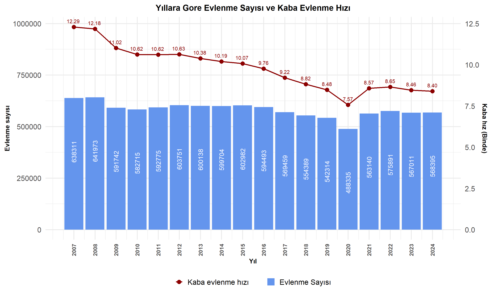

2.4.1 YILLARA GÖRE BOŞANMA SAYISI VE KABA BOŞANMA HIZ GRAFİĞİ
Boşanma konusunda ilk olarak yıllara göre boşanma sayısı verisi ele alındı.
Bu veri setinde inceleme yapılırken boşanma sayısılarında nüfus artış etkisini de gözlemleyebilmek adına kaba boşanma hızı incelemeye dahil edildi.
Kaba boşanma hızı, bir yıl içinde evlenebilecek yaştaki her 1000 nüfus başına düşen boşanma sayısıdır.
Code
# Excel dosyasını okuevlilik_bosanma_hiz <-read_excel("veri/evlilik-bosanma-nufus.xls")# Kaba bosanma hızı hesaplamasıevlilik_bosanma_hiz <- evlilik_bosanma_hiz %>%mutate(Yil =as.numeric(Yil),Kaba_Bosanma_Hizi = (Bosanma_Sayisi / Nufus_Sayisi) *1000 )# Çizgi verisi hazırlığıhizlar <- evlilik_bosanma_hiz %>%select(Yil, Kaba_Bosanma_Hizi) %>%pivot_longer(cols = Kaba_Bosanma_Hizi, names_to ="Kaba_Bosanma_Hizi", values_to ="Deger") %>%mutate(Kaba_Bosanma_Hizi ="Kaba bosanma hızı",Etiket =paste0(format(round(Deger, 2), nsmall =2), " "),Y_Pos = Deger *80000 )# Barplot çizimihizlar$Kategori <-"Kaba bosanma hızı"ggplot() +geom_bar(data = evlilik_bosanma_hiz,aes(x = Yil, y = Bosanma_Sayisi, fill ="Bosanma Sayısı"),stat ="identity") +geom_text(data = evlilik_bosanma_hiz,aes(x = Yil, y = Bosanma_Sayisi,label =format(Bosanma_Sayisi)),angle =90, vjust =0.5, hjust =3,color ="black", size =5) +geom_line(data = hizlar,aes(x = Yil, y = Y_Pos, color = Kategori, group =1),linewidth =1.2) +geom_point(data = hizlar,aes(x = Yil, y = Y_Pos),size =2.5,color ="purple") +geom_text(data = hizlar,aes(x = Yil, y = Y_Pos, label = Etiket),vjust =-1.5, size =4,color="purple" ) +scale_fill_manual(values =c("Bosanma Sayısı"="pink"), name =NULL) +scale_color_manual(values =c("Kaba bosanma hızı"="purple"), name =NULL) +scale_y_continuous(name ="Bosanma Sayısı",sec.axis =sec_axis(~./80000, name ="Kaba hız (Binde)") ) +scale_x_continuous(breaks = evlilik_bosanma_hiz$Yil) +labs(title ="Yıllara Gore Bosanma Sayısı ve Kaba Bosanma Hızının Karsılastırılması",x ="Yıl" ) +theme_minimal(base_size =20) +theme(axis.text.x =element_text(angle =90, vjust =0.5, hjust =1,size =12, face ="bold"),axis.title.x =element_text(color ="black", size =14, face ="bold"),axis.title.y =element_text(color ="black", size =14, face ="bold"),axis.title.y.right =element_text(color ="black", size =14, face ="bold"),plot.title =element_text(hjust =0.5, size =18, face ="bold"),legend.title =element_text(face ="bold"),legend.position ="bottom" )
Bu grafik, 2007 ile 2024 yılları arasındaki boşanma sayısı ve kaba boşanma hızının ilişkisini göstermektedir. Boşanma sayısı pembe sütunlarla, kaba boşanma hızı ise mor noktalarla ifade edilmiştir.
Yıllar içerisinde boşanma sayısında düzensiz bir artış trendi gözlemlenmektedir. Kaba boşanma hızı yıllar içinde artış göstermiştir. Kaba boşanma hızındaki artış, boşanma sayısındaki artış ile paralellik göstermektedir. Kaba boşanma hızındaki artış, boşanma oranların artmaya devam ettiğini ve toplumsal normların değişmesiyle boşanmanın daha yaygın hale geldiği düşünülebilir.
2020 yılındaki kritik düşüş pandemi sürecinde ülkemizde yaşanan kapanma, resmi süreçlerin aksaması, mahkemelerin ve davaların gerçekleştirilememesi gibi sebeplerden kaynaklı gerçekleşmiş olabilir.
2021 yılındaki kritik artış; pandemi sebebiyle 2020 yılında gerçekleştirilemeyen ve 2021 yılına devredilen davalar sebep olmuş olabilir. Bir diğer sebep ise pandemi sürecindeki aile içi ilişkilerde yaşanan zorluklar neticesinde daha fazla boşanma kararının alınması olabilir.
Boşanma verileri incelendiğinde, ani artış veya azalışların ülkemizde yaşanan ekonomik kriz, OHAL, deprem felaketi gibi olağanüstü olayların etkili olduğu düşünülmektedir. (2008-2009: Ekonomik Kriz, 2016 : OHAL, 2023 : Deprem Felaketi )
Code
#Kaba evlenme hızı hesaplaevlilik_bosanma_hiz <-read_excel("veri/evlilik-bosanma-nufus.xls")evlilik_bosanma_hiz <- evlilik_bosanma_hiz %>%mutate(Yil =as.numeric(Yil),Kaba_Evlenme_Hizi = (Evlenme_Sayisi / Nufus_Sayisi) *1000 )hizlar <- evlilik_bosanma_hiz %>%select(Yil, Kaba_Evlenme_Hizi) %>%pivot_longer(cols = Kaba_Evlenme_Hizi,names_to ="Kaba_Evlenme_Hizi",values_to ="Deger" ) %>%mutate(Kaba_Evlenme_Hizi ="Kaba evlenme hızı", # Legend için sabit isimEtiket =paste0(format(round(Deger, 2), nsmall =2), " "),Y_Pos = Deger *80000,Kategori ="Kaba evlenme hızı" )ggplot() +geom_bar(data = evlilik_bosanma_hiz,aes(x = Yil, y = Evlenme_Sayisi, fill ="Evlenme Sayısı"),stat ="identity" ) +geom_text(data = evlilik_bosanma_hiz,aes(x = Yil, y = Evlenme_Sayisi, label =format(Evlenme_Sayisi)),angle =90, vjust =0.5, hjust =3,color ="white", size =5 ) +geom_line(data = hizlar,aes(x = Yil, y = Y_Pos, color = Kaba_Evlenme_Hizi, group =1),size =1.2 ) +geom_point(data = hizlar,aes(x = Yil, y = Y_Pos, color = Kaba_Evlenme_Hizi),size =4 ) +geom_text(data = hizlar,aes(x = Yil, y = Y_Pos, label = Etiket),color ="darkred",vjust =-1, size =4,show.legend =FALSE ) +scale_fill_manual(values =c("Evlenme Sayısı"="cornflowerblue"), name =NULL) +scale_color_manual(values =c("Kaba evlenme hızı"="darkred"), name =NULL) +scale_y_continuous(name ="Evlenme sayısı",sec.axis =sec_axis(~./80000, name ="Kaba hız (Binde)") ) +scale_x_continuous(breaks = evlilik_bosanma_hiz$Yil) +labs(title ="Yıllara Gore Evlenme Sayısı ve Kaba Evlenme Hızı",x ="Yıl" ) +theme_minimal(base_size =20) +theme(axis.text.x =element_text(angle =90, vjust =0.5, hjust =1,size =12, face ="bold"),axis.title.y =element_text(color ="black", size =14, face ="bold"),axis.title.x =element_text(color ="black", size =14, face ="bold"),axis.title.y.right =element_text(color ="black", size =14, face ="bold"),plot.title =element_text(hjust =0.5, size =18, face ="bold"),legend.title =element_text(face ="bold",size=6),legend.position ="bottom" )
Warning: Using `size` aesthetic for lines was deprecated in ggplot2 3.4.0.
ℹ Please use `linewidth` instead.

Code
turkiye_geneli <-read_excel("veri/turkiye_geneli.xlsx")Durum <-c("evlenme_sayisi","bosanma_sayisi")grafik <- turkiye_geneli |>ggplot() +geom_line(aes(x = yil, y = evlenme_sayisi, color ="Evlenme Sayısı",group=1), linewidth =1.7) +geom_line(aes(x = yil, y = bosanma_sayisi, color ="Bosanma Sayısı",group=1), linewidth =1.7) +scale_color_manual(values =c("Evlenme Sayısı"="cornflowerblue", "Bosanma Sayısı"="pink")) +scale_y_continuous(breaks =seq(0, 700000, by =50000), labels = comma) +labs(title ="Turkiye'de Yıllara Gore Evlenme ve Bosanma Sayıları",x ="Yıl",y ="Kişi Sayısı",color ="Durum") +theme_minimal()+theme(axis.text.x =element_text(angle =90, vjust =1, face ="bold"))+theme(axis.title =element_text(hjust =0.5, size =14,face ="bold"),plot.title=element_text(hjust =0.5, size =14,face="bold"))grafik
#En büyük 10 şehir kıyaslama piramidIik_10_Sehir_Bosanma <-read_excel("veri/Iik_10_Sehir_Bosanma.xlsx")head(Iik_10_Sehir_Bosanma)
# A tibble: 6 × 3
Il Oran_2010 Oran_2024
<chr> <dbl> <dbl>
1 Adana 20.7 37.3
2 Ankara 29.8 41.5
3 Antalya 34.1 46.4
4 Bursa 22.3 34.4
5 Gaziantep 14.3 26.7
6 İstanbul 24.0 33.9
Code
# Uzun form ve piramit formatıveri_long <- Iik_10_Sehir_Bosanma %>%pivot_longer(cols =starts_with("Oran"), names_to ="Yil", values_to ="Oran") %>%mutate(Yil =str_replace(Yil, "Oran_", ""),Oran =ifelse(Yil =="2010", -Oran, Oran), # 2010 sola, 2024 sağaIl =factor(Il, levels =rev(unique(Il))) # İl sıralaması yukarıdan aşağı )ggplot(veri_long, aes(x = Il, y = Oran, fill = Yil)) +geom_bar(stat ="identity",width =0.65) +geom_text(aes(label =sprintf("%.1f", abs(Oran))),position =position_stack(vjust =0.5),size =5,color ="white")+coord_flip() +scale_y_continuous(labels = abs) +scale_fill_manual(values =c("2010"="skyblue", "2024"="darkorange")) +labs(title ="2010 ve 2024 Yıllarına Gore En Kalabalık 10 Sehirin Bosanma Oranları ",x ="İl",y ="Oran (%)",fill ="Yıl" ) +theme_minimal() +theme(plot.title =element_text(hjust =0.5, face ="bold",size=18),axis.text.y =element_text(hjust =0.5,size =12), axis.title.y =element_text(hjust =0.5,size =14,face="bold"), axis.title.x =element_text(hjust =0.5,size =14,face="bold"), legend.position ="top" )
Code
#2010 yılındaki Nufüsa Göre Boşanma oranının en az olduğu 10 Şehrin Gösterimi#Evlenme_bosanma_orani_2010_azEvlenme_bosanma_orani_2010_az <-read_excel("veri/Evlenme_bosanma_orani_2010_az.xlsx")str(Evlenme_bosanma_orani_2010_az)
p1<-Evlenme_bosanma_orani_2010_az|>ggplot(aes(x=Il, y=Oran)) +geom_bar(stat ="identity", fill ="skyblue",width =0.5)+labs(title ="Bosanma Sayısının Evlilige Oranının En Az Oldugu İller - 2010",x ="İl",y ="Bosanmanın Evlilige Oranı")+theme_light()+theme(plot.title =element_text(hjust =0.5, size =12, face ="bold"))+geom_text(aes(label =sprintf("%.1f", Oran)), vjust =-0.5,size =4,fontface ="bold")+ylim(0, 15)#2024 yılındaki Nufüsa Göre Boşanma oranının en az olduğu 10 Şehrin GösterimiEvlenme_bosanma_orani_2024_az <-read_excel("veri/Evlenme_bosanma_orani_2024_az.xlsx")str(Evlenme_bosanma_orani_2024_az)
p2<-Evlenme_bosanma_orani_2024_az|>ggplot(aes(x=Il, y=Oran)) +geom_bar(stat ="identity", fill ="red",width =0.5)+labs(title ="Bosanma Sayısının Evlilige Oranının En Az Oldugu İller - 2024",x ="Il",y ="Bosanmanın Evlilige Oranı")+theme_light()+theme(plot.title =element_text(hjust =0.5, size =12, face ="bold"))+geom_text(aes(label =sprintf("%.1f", Oran)), vjust =-0.5,size =4,fontface ="bold")+ylim(0, 15)#2010 yılındaki Nufüsa Göre Boşanma oranının en çok olduğu 10 Şehrin GösterimiEvlenme_bosanma_orani_2010_cok <-read_excel("veri/Evlenme_bosanma_orani_2010_cok.xlsx")str(Evlenme_bosanma_orani_2010_cok)
p3<-Evlenme_bosanma_orani_2010_cok|>ggplot(aes(x=Il, y=Oran)) +geom_bar(stat ="identity", fill ="skyblue",width =0.5)+labs(title ="Bosanma Sayısının Evlilige Oranının En Cok Oldugu İller - 2010",x ="İl",y ="Bosanmanın Evlilige Oranı")+theme_light()+theme(plot.title =element_text(hjust =0.5, size =12, face ="bold"))+geom_text(aes(label =sprintf("%.1f", Oran)), vjust =-0.5,size =4,fontface ="bold")+ylim(0, 70)#2024 yılındaki Nufüsa Göre Boşanma oranının en çok olduğu 10 Şehrin GösterimiEvlenme_bosanma_orani_2024_cok <-read_excel("veri/Evlenme_bosanma_orani_2024_cok.xlsx")str(Evlenme_bosanma_orani_2024_cok)